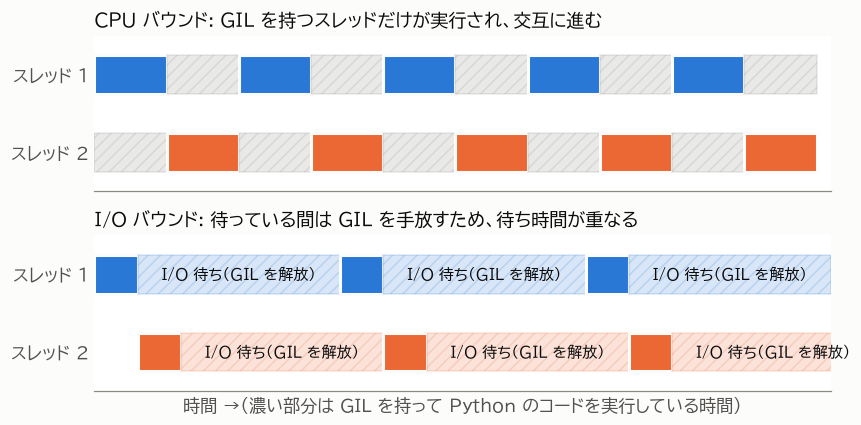

第 3 章 CPython の実行モデルと GIL
Python でスレッドを使うときに必ず知っておくべきものが GIL である。GIL は、Python のスレッドで何が速くなり、何が速くならないかを決めている。この章では、GIL の仕組みと、それがスレッドに与える影響を説明する。
CPython と GIL
Python の公式の処理系は、C 言語で実装された CPython である。python.org から入手できる Python や、多くの OS に含まれている Python は CPython である。本書で単に「Python」と書いた場合は CPython を指す。
CPython には GIL（Global Interpreter Lock） と呼ばれる仕組みがある。GIL は、1 つのプロセスの中で Python のバイトコードを実行できるスレッドを、ある時点で 1 つに制限するロックである。スレッドが Python のコードを実行するには GIL を獲得する必要があり、GIL を持っていない他のスレッドは、GIL が解放されるまで待たされる。
GIL が存在する理由
CPython は、オブジェクトがいくつの場所から参照されているかを数える 参照カウント によってメモリを管理している。参照カウントは、変数への代入や関数の呼び出しのたびに増減する。複数のスレッドが同時に参照カウントを書き換えると、値が壊れてメモリが誤って解放されたり、解放されずに残ったりする。
GIL は、この参照カウントをはじめとするインタプリタ内部のデータを、1 つのロックでまとめて保護する仕組みである。オブジェクトごとにロックを設ける方式と比べて、次の利点がある。
シングルスレッドのプログラムが速い（細かいロックの獲得・解放にかかる時間が無い）
C 言語で書かれた拡張モジュールを、スレッド安全性をあまり気にせずに書ける
一方で、Python のコードを複数のスレッドで並列に実行できないという制約が生じる。
GIL が解放される場面
GIL を持つスレッドがずっと GIL を持ち続けるわけではない。次の場面で GIL は解放され、他のスレッドが実行できるようになる。
場面 |
説明 |
|---|---|
ブロッキングする I/O |
ファイルの読み書き、ソケットの送受信、 |
一定時間の経過 |
GIL を一定時間（既定では 5 ミリ秒）持ち続けたスレッドは、他のスレッドが待っていれば GIL を手放す。この時間は |
C 拡張の計算 |
C 言語で書かれた拡張モジュールは、Python のオブジェクトに触れない計算の間、GIL を解放できる。標準ライブラリの |
図 4 に、2 つのスレッドが CPU バウンドな処理を行う場合と、I/O バウンドな処理を行う場合の動きを示す。


図 4 GIL の下でのスレッドの動き
CPU バウンドな処理では、2 つのスレッドが GIL を取り合いながら交互に実行される。同時に実行されているスレッドは常に 1 つなので、全体の時間は逐次処理と変わらない。GIL の受け渡しにも時間がかかるため、逐次処理より遅くなることも多い。
I/O バウンドな処理では、スレッドは I/O を待っている間 GIL を解放する。そのため、あるスレッドが I/O を待っている間に別のスレッドが実行でき、待ち時間が重なって全体の時間が短くなる。
GIL がスレッドに与える影響のまとめ
ここまでの内容から、通常の CPython でのスレッドの性質は次のようにまとめられる。
I/O バウンドな処理は、スレッドで速くなる。
Python で書かれた CPU バウンドな処理は、スレッドでは速くならない。並列に実行するにはプロセスを使う。
C 拡張の中で GIL を解放する処理（NumPy の演算、大きなデータのハッシュ計算や圧縮など）は、スレッドでも並列に実行できる場合がある。
GIL はスレッド安全性を保証しない
GIL があるため「Python ではスレッド間の排他制御は不要」と考えるのは誤りである。GIL が保証するのは、インタプリタ内部のデータが壊れないことだけである。プログラムのデータの整合性は保証しない。
たとえば counter += 1 は、「counter の値を読む」「1 を足す」「counter に書き込む」という複数のバイトコードからなる。この途中で別のスレッドに切り替わると、更新が失われることがある。スレッドが共有するデータを書き換える場合は、第 5 章 スレッドによる並行処理 で説明するロックなどを使って保護する必要がある。
GIL の無い Python
GIL の制約を取り除くための取り組みも進んでいる。Python 3.13 では GIL を無効にした free-threaded ビルド が実験的に提供され、Python 3.14 で正式にサポートされた。また、Python 3.12 以降では、1 つのプロセスの中に独立した GIL を持つ サブインタプリタ を複数作れるようになった。これらは 第 10 章 GIL を超える新しい選択肢 で紹介する。
ただし、本書の執筆時点でも、通常配布されている Python は GIL が有効なビルドである。本書の説明は、特に断らない限り GIL が有効な Python を前提とする。